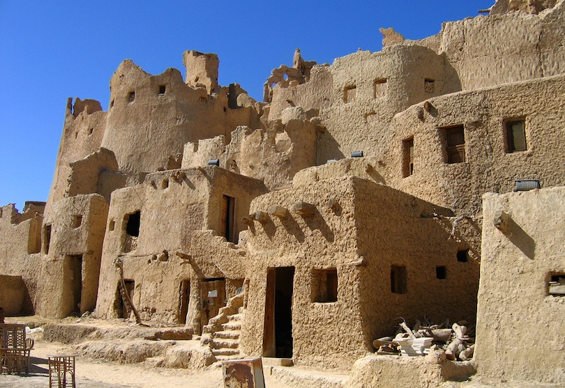

Siwa Oasis
is an urban oasis in Egypt between the Qattara Depression and the Great Sand Sea in the Western Desert, nearly 50 km (30 mi) east of the Libyan border, and 560 km (348 mi) from Cairo.[1][2][3] About 80 km (50 mi) in length and 20 km (12 mi) wide,[1] Siwa Oasis is one of Egypt's most isolated settlements, with about 33,000 people,[4] mostly Berbers,[1] who developed a unique culture and a distinct language of the Berber family called Siwi.[5] Its fame lies primarily in its ancient role as the home to an oracle of Ammon, the ruins of which are a popular tourist attraction which gave the oasis its ancient name Oasis of Amun Ra. Historically, it is part of Ancient Libya.
History
Although the oasis is known to have been settled since at least the 10th millennium BC, the earliest evidence of any connection with Ancient Egypt is the 26th Dynasty, when a necropolis was established. Ancient Greek settlers at Cyrene made contact with the oasis around the same time (7th century BC), and the oracle temple of Amun (Greek: Zeus Ammon), who, Herodotus was told, took the image here of a ram. Herodotus knew of a "fountain of the Sun" that ran coldest in the noontime heat.[10] During his campaign to conquer the Persian Empire, Alexander the Great reached the oasis, supposedly by following birds across the desert. The oracle, Alexander's court historians alleged, confirmed him as both a divine personage and the legitimate Pharaoh of Egypt, though Alexander's motives in making the excursion, following his founding of Alexandria, remain to some extent inscrutable and contested. During the Ptolemaic Kingdom, its Ancient Egyptian name was sḫ.t-ỉm3w, meaning "Field of Trees". Evidence of Christianity at Siwa is uncertain, but in 708 the Siwans resisted an Islamic army, and probably did not convert until the 12th century. A local manuscript mentions only seven families totaling 40 men living at the oasis in 1203. In the 12th century, Al-Idrisi mentions it as being inhabited mainly by Berbers, with an Arab minority; a century before Al-Bakri stated that only Berbers lived there. The Egyptian historian Al-Maqrizi travelled to Siwa in the 15th century and described how the language spoken there 'is similar to the language of the Zenata'. The first European to visit since Roman times was the English traveler William George Browne, who came in 1792 to see the ancient temple of the Oracle of Amun. The oasis was officially annexed to the Eyalet of Egypt by Muhammad Ali of Egypt in 1819. In the Spring of 1893, German explorer and photographer, Hermann Burchardt, took photographs of the architecture of the town of Siwa, now stored at the Ethnological Museum of Berlin. The Siwans are a Berber people, so demographically and culturally they were more closely related to nearby Libya, which has a large Berber population, than to Egypt, which has a negligible Berber population. Consequently, Arab rule from distant Cairo was at first tenuous and marked by several revolts. Egypt began to assert firmer control after a 1928 visit to the Oasis by King Fuad I, who berated the locals for "a certain vice" and specified punishments to bring Siwan behaviour in line with Egyptian morals (see next section). Siwa was also the site of some fighting during World War I and World War II. The British Army's Long Range Desert Group (LRDG) was based here, but Rommel's Afrika Korps also took possession three times. German soldiers went skinny dipping in the lake of the oracle, contrary to local customs which prohibit public nudity. In 1942 while the Italian 136th Infantry Division Giovani Fascisti occupied the oasis, a tiny Egyptian puppet government-in-exile was set up at Siwa. The oasis makes a brief appearance as a base of the LRDG in the 1958 war film Ice Cold in Alex. The ancient fortress of Siwa, known as the Shali Ghadi ("Shali" being the name of the town, and "Ghadi" meaning remote), was built on natural rock (an inselberg) and made of kershif (salt and mud-brick) and palm logs. After it was damaged by three days of heavy rains in 1926 it was abandoned for similar unreinforced construction housing on the plain surrounding it, and in some cases those in turn have been replaced by more modern cinder block and sheet metal roof buildings. Only one building in the Shali complex has been repaired and is in use, a mosque. Gradually eroded by infrequent rains and slowly collapsing, the Shali remains a prominent feature, towering five stories above the modern town and lit at night by floodlights. It is most easily approached from its southwest side, south of the end of the paved road which curves around from the north side of the Shali. Several uneven pedestrian streets lead from the southwest end of the Shali into it, the ground rent in places by deep cracks. Many of the unreinforced kershif buildings bordering the streets of the Shali are also split by large cracks, or they are partially collapsed. Other local historic sites of interest include: the remains of the oracle temple; the Gebel al Mawta (the Mountain of the Dead), a Roman-era necropolis featuring dozens of rock-cut tombs; and "Cleopatra's Bath", an antique natural spring. The fragmentary remains of the oracle temple, with some inscriptions dating from the 4th century BC, lie within the ruins of Aghurmi. The revelations of the oracle fell into disrepute under the Roman occupation of Egypt.